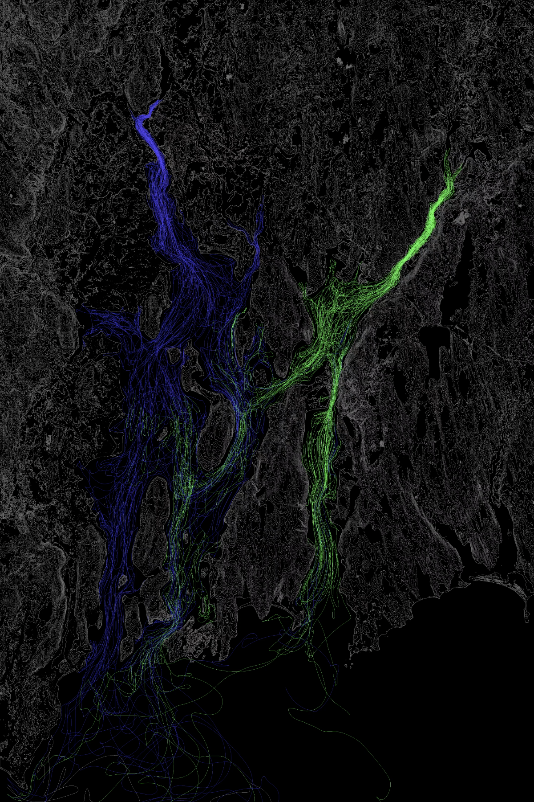

ILLUMINATED BAY
The Illuminated Bay, a project funded by a Rhode Island Science and Technology Advisory Council (RI-STAC)
collaborative research grant. The Illuminated Bay is a large-scale visualization experience displaying complex
ecological dynamics on a three-dimensional model of Narragansett Bay.
My responsibilities were to create compelling, visual, data-driven content concerning Narragansett Bay's
history, ecology and future using Adobe After Effects and investigate the technology and methods involving
metrics and data collection for public art installation.
